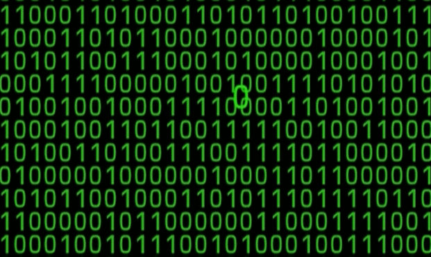
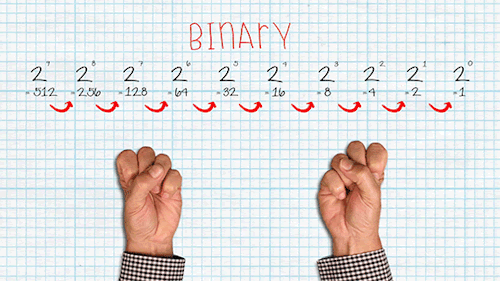
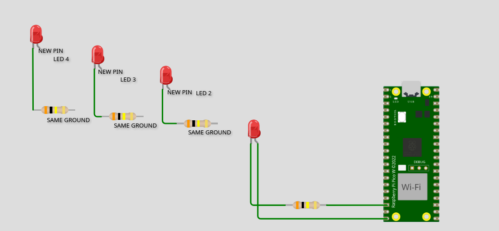

Today we are going to learn about binary numbers. Binary is the way computers represent information using just two numbers: 0 and 1.
By the end of class, you should be able to:
We normally count using numbers from 0 to 9. This is called the decimal system.

Binary is different. It only has two numbers: 0 and 1.
You can think of it like a light switch:
Computers have lots of tiny electronic switches inside them. These switches can basically be in two states: on or off.
That's why 0 and 1 work so well for computers.
Binary numbers have place values, just like the numbers we normally use. The difference is that binary place values go up by powers of 2.
| 8 | 4 | 2 | 1 |
|---|---|---|---|
| 2³ | 2² | 2¹ | 2⁰ |
What does 1011 mean?
First, write the place values above it:
8 4 2 1
1 0 1 1
We only use the numbers that have a 1 underneath them.
8 + 2 + 1 = 11
So, 1011 in binary is 11 in decimal.
Try to figure these out:
We can also change a regular number into binary.
For example, let's turn 13 into binary.
8 4 2 1
1 1 0 1
8 + 4 + 1 = 13
So 13 = 1101 in binary.
Get together with a partner.
One person chooses a number from 1 to 15. The other person tries to write that number in binary. Then switch!
